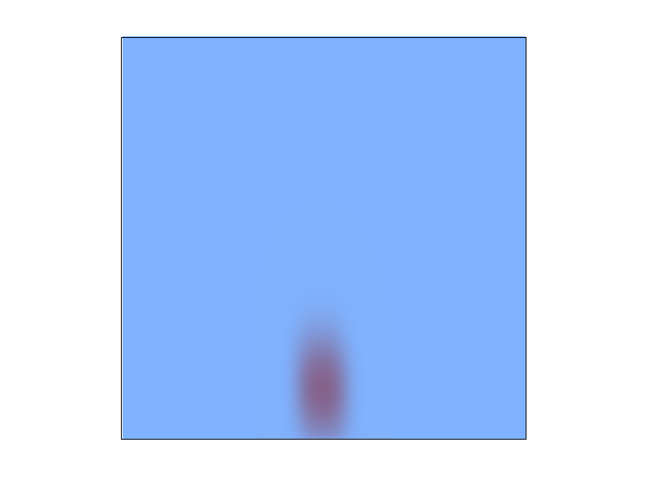
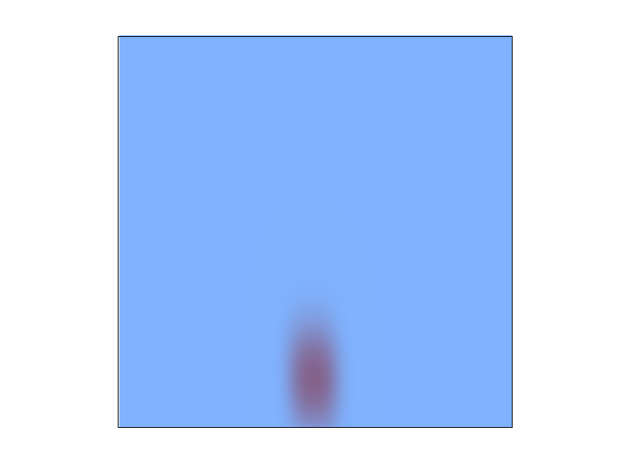

|

|
|
|  | ||
Our project was to build a functioning fluid simulator that could simulate the motion of a simple liquid in two dimensions semirealistically, or at least realistically enough to fool a human observer. Our primary source for this was this paper by Stam, although we added on an entirely different set of boundary conditions both to optimize this for liquids and to represent anything rendered with Project 1 as an immovable solid that our liquids can interact with. We also added functionality to the Project 1 framework, including the ability to rasterize circles and the ability to take a timestep by pressing “T” in the user interface.
The data structures we used were grids that stored densities, xVelocities, and yVelocities at the centers of each conceptual grid cell. We originally stored xVelocities and yVelocities in grids with slightly different dimensions, but we nixed this when we saw that it was easier to keep everything represented in the same way so we could create subroutines that would function across all grids, as suggested by Stam. The ultimate goal of our project was to reasonably approximate solutions to the Navier Stokes equations, which would analytically determine how the densities and velocities across the grid should change after a time step. The Navier Stokes equations are very complicated and have many forms, but the ones most applicable to our scenario are these two
which give us the derivatives of the density and velocity respectively with respect to time, enabling us to approximate how these values will change after a time step. Both of these equations state that the rate of change of a value on the grid is given by the effect of the velocities in carrying that value (advection), the tendency of the value to stabilize across the entire body of liquid (diffusion), and the influence of external sources. The first equation establishes this for velocity (where the external sources are forces on the entire system, just gravity in our case) and the second equation establishes this for density (where the external sources are sources or sinks, which we did not implement). Thus, in order to approximate a solution to the Navier Stokes equations, we would need to have helper methods to advect and diffuse values across the grid. These methods, advect and diffuse, as well as an additional method, project, were already programmed in C in Stam’s paper, so we copied these nearly directly. advect simulates the effect of the velocities pushing values along the grid by traveling backward along the velocity vector from the center of each grid square to find the spot that will wind up at the center of the grid square after a time step, then linearly interpolates the value at this spot and sets the grid square’s new value to be this. diffuse essentially just sets each grid value to a weighted sum of its neighbors (optimized by Gauss-Seidel relaxation). Neither of these approximations conserves mass, so we make frequent use of the method project, which “corrects” the velocities on the grid into a “mass conserving flow”, meaning (roughly) that there is no point around which there is more velocity pointing inward than outward, and vice versa. Intuitively, this means that there is nowhere that the liquid can “disappear”, since it will continue flowing outward from any point it flows into. Our complete algorithm is as follows:
To complete one time step:
1.We add external forces (typically just gravity, or occasionally additional turbulence) to the current velocities
2.We diffuse the velocities
3.We project the velocities to be mass-conserving
4.We advect the velocities along themselves
5.We project the velocities to be mass-conserving again
6.We diffuse the densities
7.We advect the densities along the new velocities
8.We update the markers
With small variations, steps 1-7 follow the outline in Stam, but we realized as we went through the project that Stam’s research was more directly aimed toward modeling gasses than liquids, since liquid behavior involves the more complicated factors induced by forces at the interface between liquid and air, which we had no real way of keeping track of accurately thus far. To remedy this, we added a set of particles to our algorithm that we call markers. Whenever we initialize a grid square with water, we place 100 markers uniformly throughout it, and then in every timestep, we update the markers by sending them along the velocities interpolated by their position in the grid, then label a grid square as empty if it contains no particles, surface if it is nonempty but is adjacent to an empty cell, and full otherwise, allowing us to maintain the proper boundary conditions in set_bnd. set_bnd is a method called frequently throughout the algorithm to maintain boundary conditions. The version that appears in Stam just updates the grid cells on the border to have an amount of density equal to the average of the grid cells they touch, and a velocity to oppose the velocity of the grid cells they touch, but ours has to handle more complicated cases in addition to these ones. Our set_bnd first has to handle boundary conditions at solids, by checking supersample_buffer to see where pixels are rendered and then setting the corresponding grid squares to have no pressure, and to have velocities that oppose any velocities directed into them. This led to a particular complication, since there is no way to set a velocity to oppose the velocities of the grid cells around it if there is water in three of the surrounding cells. To avoid this complication, we made our grid twice the size of supersample_buffer in each dimension, so that each solid would be represented by pixels in supersample_buffer, which are represented by 2 by 2 blocks of grid cells, meaning there is no way a solid grid cell could have water on three or more sides, and we avoid the issue completely. Finally, we also set the appropriate boundary conditions at the interface between water and air, where this interface is given to us by the positions of the markers, following this documentation . Still, even with these additions, our algorithm guarantees stability, so it tends to underrepresent the amount of energy present in the system and reach a steady state without a lot of violent splashes. The correction to this commonly made in the literature is vorticity confinement, as in this research but this would be more natural for a particle based system, and in sticking with a grid based representation, we decided not to pursue realistic splashing and air-water surface complexities, but rather to focus on other cool effects we could observe in our liquid, even if some of those effects are a bit more gas-like than liquid-like.
Through completing this project, we learned a lot about fluid simulation: we learned that fluid behavior is completely determined by just advection, diffusion, and external sources, which is a conceptually simple statement with an unbelievable amount of underlying complexity. We also had a debugging experience full of lessons learned, since it was incredibly difficult to figure out why the fluid simulator wasn’t displaying the emergent behavior we wanted when the only way to investigate was to reason through the entire code from start to finish over and over again, isolating parts until we could figure out what was wrong.
The following images depicts a drop of blood in a pool of water:
|
|
|
|
|  | ||
The following images progress through a scene of turbulent water in a bath tub. The last image is the resting state.

|

|
 |

|

|

|

|

|

|

|

|
The images below depict wine being poured into a wine glass.
We are building off our own Project 1 code. This means we are also using the same computing platform, hardware and software resources as we used in Project 1.
Click here for a comparison of grid-based techniques and the Navier-Stokes fluid simulation
Click here for a Wikipedia page on the Navier-Stokes equations
Click here for a paper on simulating grid-based fluids
Here is the link to Stam's research.
This is an alternative approach.
We primarily split up the code-writing as follows, although everyone did a bit of everything.
1.Reid wrote and debugged our version of Stam’s fluid simulator that everything else was built off of.
2.Camran integrated everything to work with the Project 1 framework, and added the timestep and rasterize_circle functionality to this framework.
3.Anna implemented the marker system and chose and tested our boundary conditions.
The other testing, debugging, rendering, and descriptive tasks present in the project were mostly split evenly.